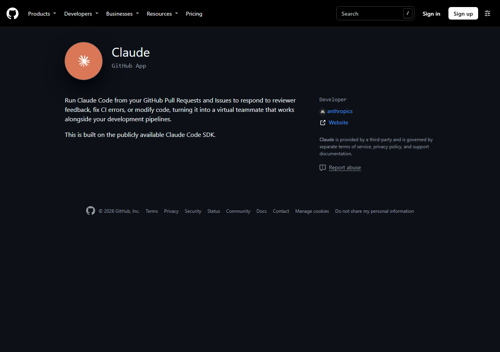
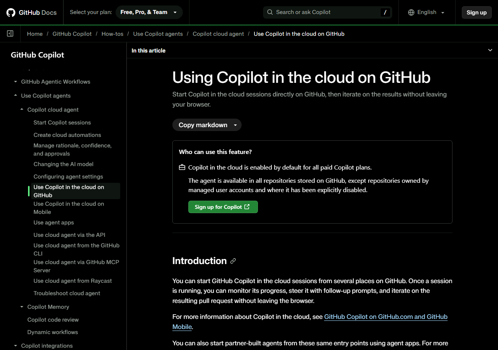
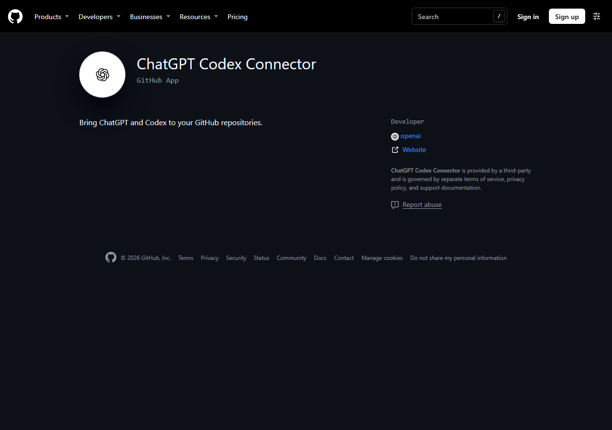

Postup, jak AI agentovi nastavit přístup ke konkrétnímu GitHub repozitáři, aby v něm mohl pracovat a dělat změny.
Ukázkový repozitář: github.com/Frantisek-Vojta/ai-agenti · Datum: 25. 11. 2026
Porovnávané agenty
Claude Code (Anthropic) – cloudová verze na claude.ai/code přes GitHub aplikaci Claude, plus lokální varianta (CLI / desktop).
GitHub Copilot cloud agent (GitHub/Microsoft) – agent přímo v GitHubu, bez instalace další aplikace.
OpenAI Codex (cloud) – přes GitHub aplikaci ChatGPT Codex Connector a „prostředí“ (environment).
Společný princip
Cloudový agent běží na serveru poskytovatele, ne na vašem PC. Aby mohl číst kód a zapisovat změny, potřebuje oprávnění ke GitHub repozitáři. Obvykle se to řeší GitHub App: aplikaci nainstalujete na svůj účet a při instalaci zvolíte Only select repositories a vyberete jen ten jeden repozitář. Agent pak:
naklonuje repozitář do izolovaného prostředí (VM / kontejner),
udělá změny ve vlastní větvi (ne přímo v main),
pushne větev a otevře pull request, který zkontroluje a sloučí člověk.
Bezpečnost: vždy dávejte přístup jen k nutným repozitářům (ne „All repositories“), nikdy nevkládejte tokeny/API klíče do kódu – patří do GitHub Secrets – a změny agenta kontrolujte v PR před sloučením.
1. Claude Code (Anthropic)
Požadavky: účet na claude.ai s plánem Pro / Max / Team / Enterprise (cloudové relace), GitHub účet s právem zápisu do repozitáře.
Varianta A – cloud (claude.ai/code) přes GitHub App
Otevřete https://claude.ai/code a přihlaste se.
Při prvním spuštění vás průvodce vyzve k propojení GitHubu – klikněte na připojení GitHubu a autorizujte aplikaci Claude (github.com/apps/claude).
Na stránce instalace aplikace zvolte účet, vyberte Only select repositories a v seznamu zvolte ai-agenti. Potvrďte Install. (Aplikace žádá mj. Contents, Pull requests, Issues – read/write; GitHub neumožňuje přijmout jen část oprávnění.)
Zpět na claude.ai/code vyberte repozitář Frantisek-Vojta/ai-agenti a větev. Relace používá prostředí (environment) – výchozí „Default“ má omezený přístup k internetu, v nastavení prostředí lze upravit síť, proměnné a setup skript.
Zadejte úkol, např. „Vytvoř README.md s popisem projektu a otevři pull request.“
Claude pracuje ve virtuálním stroji Anthropicu, změny commitne do nové větve a pushne ji. Vpravo je karta Changes s diffem (+/− řádky).
Z karty Changes vytvořte pull request, na GitHubu ho zkontrolujte a slučte (Merge).

Obr. 1 – Veřejná stránka GitHub aplikace „Claude“ (github.com/apps/claude), kterou se agentovi uděluje přístup.Obr. 2 – claude.ai/code: propojení GitHubu a výběr repozitáře.Obr. 3 – Instalace aplikace Claude na GitHubu: „Only select repositories“ → ai-agenti.Obr. 4 – Běžící úkol a karta Changes s diffem.Obr. 5 – Pull request vytvořený agentem na GitHubu.
Bezpečnost (dle dokumentace): GitHub přihlašovací údaje zůstávají šifrovaně na serverech Anthropicu a do VM se nedostanou – Git operace jdou přes proxy, která credential přidá na straně serveru. Síť je ve výchozím stavu omezená.
Varianta B – lokálně (Claude Code CLI / desktop aplikace)
Instalace ve Windows PowerShellu: irm https://claude.ai/install.ps1 | iex, ověření claude --version. (Alternativně desktop aplikace Claude → záložka Code.)
Naklonujte repozitář: git clone https://github.com/Frantisek-Vojta/ai-agenti.git. Git se k GitHubu autentizuje vašimi údaji (Git Credential Manager nebo gh auth login) – agent tedy používá vaše oprávnění.
V adresáři repozitáře spusťte claude (nebo v desktop aplikaci zvolte složku) a přihlaste se.
Zadejte úkol; Claude upravuje soubory a před každou akcí se ptá na povolení (podle režimu oprávnění). Požádejte o „commitni změny a pushni je do nové větve“.
Volitelně /install-github-app – nainstaluje aplikaci Claude a GitHub Actions workflow, takže pak stačí napsat @claude do issue/PR komentáře (vyžaduje secret ANTHROPIC_API_KEY nebo CLAUDE_CODE_OAUTH_TOKEN).
Obr. 6 – Lokální Claude Code v naklonovaném repozitáři ai-agenti (commit + push).
2. GitHub Copilot cloud agent
Požadavky: placený plán Copilot (Pro, Pro+, Business, Enterprise; ve Free není cloud agent zahrnut), právo zápisu do repozitáře. Copilot je přímo součástí GitHubu, takže se neinstaluje žádná další aplikace – přístup je dán tím, že repozitář je na GitHubu a agent je pro něj povolen.
Postup
Ověření povolení: v repozitáři ai-agenti → Settings → v postranním menu sekce Code, planning, and automation → Copilot. Zde lze agenta pro repozitář vypnout/zapnout a nastavit Internet access (firewall, doporučený allowlist). U organizací musí agenta povolit i správce v politikách.
Spuštění úkolu: na hlavní stránce repozitáře otevřete záložku Agents (nebo panel agentů vedle „Go to file“, případně github.com/copilot).
V poli pro zadání zvolte repozitář Frantisek-Vojta/ai-agenti, režim (Interactive/Autopilot), model a prostředí (Cloud nebo Actions).
Napište úkol, např. „Přidej soubor .gitignore pro Node.js a otevři pull request.“ a klikněte na Start task.
Alternativa přes issue: Issues → otevřete issue → vpravo Assignees → Copilot. V dialogu „Assign to Copilot“ lze zvolit cílovou větev a doplnit prompt.
Copilot vytvoří novou větev, pracuje v cloudovém prostředí, průběh je vidět v logu relace a nakonec otevře pull request.
GitHub Actions workflow na PR od Copilota se ve výchozím stavu nespustí sám – je nutné kliknout Approve and run workflows. Další úpravy lze vyžádat komentářem @copilot … v PR.
Volitelně: soubor .github/workflows/copilot-setup-steps.yml (job musí mít název copilot-setup-steps) připraví prostředí – instalace závislostí apod.

Obr. 7 – Oficiální dokumentace GitHub: „Using Copilot in the cloud on GitHub“ (kdo může funkci používat).Obr. 8 – Settings → Copilot v repozitáři ai-agenti (povolení agenta, Internet access).Obr. 9 – Záložka Agents: výběr repozitáře a zadání úkolu.Obr. 10 – Průběh relace Copilota.Obr. 11 – Pull request od Copilota („Approve and run workflows“).
Lokální varianta: ve VS Code / JetBrains s otevřeným naklonovaným repozitářem otevřete Copilot Chat a přepněte na Agent. Agent upravuje soubory lokálně, každý příkaz v terminálu musíte potvrdit; commit a push pak probíhá vašimi Git údaji.
3. OpenAI Codex (cloud)
Požadavky: účet ChatGPT s přístupem ke Codexu, GitHub účet. Přístup ke kódu zajišťuje GitHub aplikace ChatGPT Codex Connector.
Postup
Otevřete Codex (chatgpt.com/codex nebo aplikace ChatGPT → Codex) a přihlaste se.
Při prvním použití budete vyzváni k propojení GitHubu – autorizujte svůj GitHub účet.
Nainstalujte aplikaci ChatGPT Codex Connector a zvolte Only select repositories → ai-agenti → Install.
Vytvoření prostředí: Settings → Codex Cloud → Environments → Create environment (nebo při novém úkolu Select environment → Create environment). Vyberte repozitář Frantisek-Vojta/ai-agenti.
V nastavení prostředí lze určit setup skript, proměnné, secrets a přístup k internetu (ve výchozím stavu agent během práce internet nemá; lze povolit jen správce balíčků / vybrané domény). Prostředí uložte a Publish.
Zadejte úkol, např. „Napiš jednoduchý skript hello.py a přidej o něm zmínku do README.“ Každý úkol běží ve vlastním izolovaném kontejneru.
Po dokončení zkontrolujte diff, případně požádejte o úpravy, a klikněte na Create PR – Codex pushne větev a otevře pull request na GitHubu.
Volitelně: v nastavení Code review zapněte automatické revize; v PR pak stačí komentář @codex review.

Obr. 12 – Veřejná stránka GitHub aplikace „ChatGPT Codex Connector“.Obr. 13 – Codex: propojení GitHub účtu.Obr. 14 – Instalace ChatGPT Codex Connector: „Only select repositories“ → ai-agenti.Obr. 15 – Vytvoření prostředí pro repozitář (internet access, setup).Obr. 16 – Dokončený úkol s diffem a tlačítkem Create PR.Obr. 17 – Pull request od Codexu na GitHubu.
Lokální varianta: Codex CLI – v naklonovaném repozitáři spustit codex, přihlásit se „Sign in with ChatGPT“. Běží v sandboxu (workspace-write): zapisuje jen do složky projektu, .git je pro něj jen ke čtení a síť je ve výchozím stavu vypnutá – commit/push tedy provedete vy, nebo ho schválíte.
4. Srovnání
Claude Code
GitHub Copilot
OpenAI Codex
Jak získá přístup
GitHub App „Claude“ (nebo /web-setup s gh tokenem)
Vestavěno v GitHubu, povolení v Settings → Copilot
GitHub App „ChatGPT Codex Connector“
Omezení na 1 repo
Only select repositories
Agent povolen/zakázán per repozitář; uživatel volí repo v úkolu
Only select repositories + výběr repa v prostředí
Kde běží
VM Anthropicu / lokálně
Cloud sandbox nebo GitHub Actions
Kontejner OpenAI / lokálně (CLI)
Výstup
Větev + PR, Auto-fix PR
Větev + PR, @copilot v PR
Větev + PR, @codex review
Internet během práce
Omezený (nastavitelné v environment)
Firewall s allowlistem
Vypnutý ve výchozím stavu (nastavitelné)
Kontrola člověkem
Merge PR
Merge PR + schválení workflow
Merge PR
Všechny tři agenty spojuje stejný model bezpečné práce: minimální oprávnění (jen vybraný repozitář), práce v izolovaném prostředí, změny ve vlastní větvi a pull request jako místo, kde člověk změny zkontroluje.
5. Zdroje
Všechny zdroje navštíveny 25. 11. 2026.
Claude Code (Anthropic)
Anthropic. Claude Code on the web. https://code.claude.com/docs/en/claude-code-on-the-web
Anthropic. Claude Code GitHub Actions. https://code.claude.com/docs/en/github-actions
Pozn.: adresy developers.openai.com/codex/* v době zpracování přesměrovávaly na learn.chatgpt.com/docs/*. Obrázky 1, 7 a 12 jsou snímky veřejných stránek; ostatní snímky jsou pořízeny autorem při vlastním nastavení.